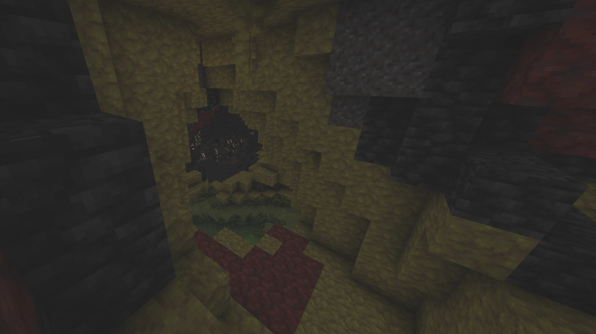
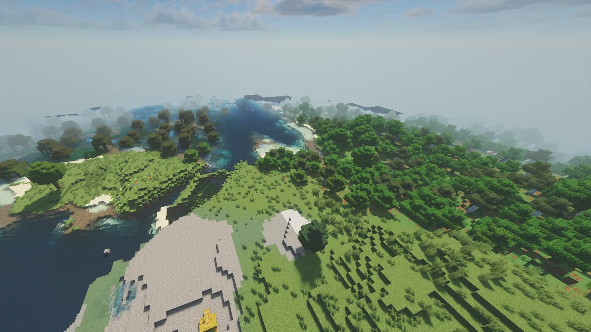
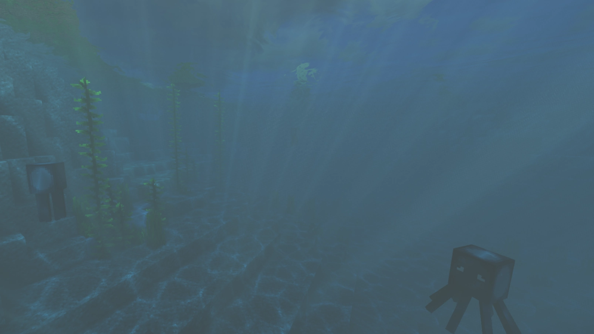
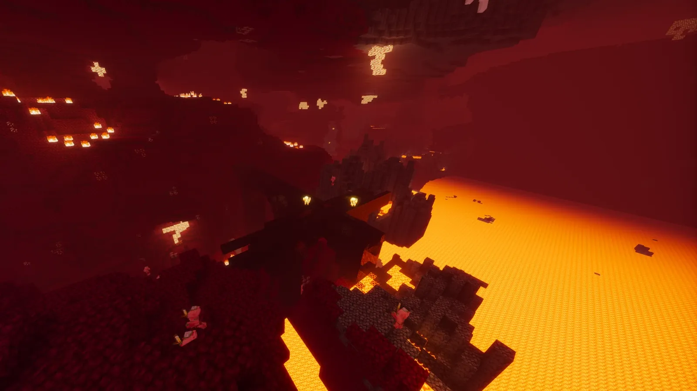
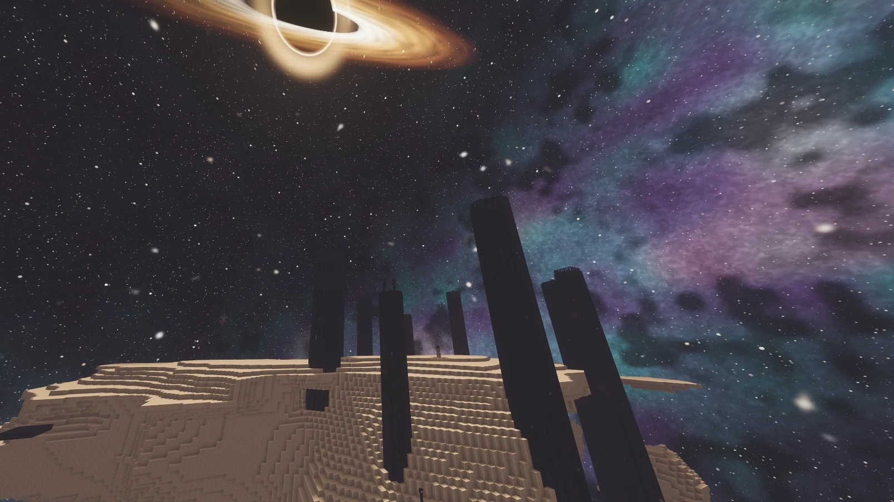

Light
Light that has a colour
Torches glow orange, soul fire glows blue and amethyst tints a cave purple. Light spreads through the blocks around you, and nearby blocks and mobs cast short shadows from it.
Cornea aims for the warm, soft look of the big shaderpacks and spends its frame time where your eye lands first: the light near you, the sky above you, and the water in front of you.
Light
Torches glow orange, soul fire glows blue and amethyst tints a cave purple. Light spreads through the blocks around you, and nearby blocks and mobs cast short shadows from it.
Sky
Two layers of volumetric clouds with thin cirrus above them, auroras on clear nights, and in the End, a black hole that bends the starlight around it.
Water
Uneven waves that never line up in rows, caustics dancing on the seabed and godrays under the surface. A torch or lava pool lights the water from below.
Side by side
Each pair was shot from the same place, with Cornea on the left and Photon on the right. Photon is made by SixthSurge and is shown here only for comparison.

Cornea Photon
Photon
Cornea Photon
Photon
Cornea Photon
Photon Cornea
Cornea
Photon Cornea
Cornea Photon
Photon
Cornea Photon
Photon Cornea
Cornea Photon
PhotonUnder the hood
Most of Cornea's speed comes from doing expensive work less often, at lower resolution, and only when it shows.
A · Sky
Clouds and godrays render at half resolution and fill in over a few frames, so they cost about a quarter of the pixels.
B · Light
Coloured light flows one block per frame through a 96-block volume around you, instead of being solved from scratch every frame.
C · Camera
The camera sets its brightness from how much sun and sky reach you, so there's no costly average of the whole picture.
D · Blocks
Metals, polished stone, gems and glowing ores get their gloss and surface detail from Cornea itself. No resource pack, no extra textures to read.
E · Settings
Every effect drops out of the shader when you switch it off, so the Low profile does less work, not just less drawing.
Works with
Cornea needs Iris, and Iris needs Sodium, so install both. It is built and tested on Minecraft 26.x, including clients that bundle them such as OneClient.
Compatibility
Crossed out: not supported yet. Cornea skips far-distance terrain to keep its frame budget for what's close to you.